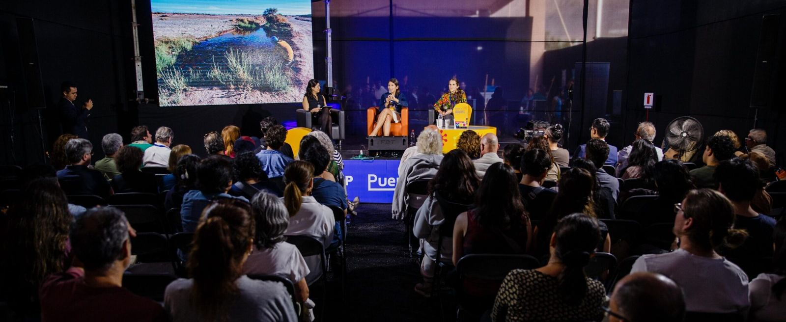

Festivals · Culture
Festival de Ciencia Puerto de Ideas Antofagasta 2027
- Dates
- –
- Location
- Antofagasta, Chile
- Format
- In-person
- Category
- Culture
- Industry
- Science and ideas festival
- Organiser
- Fundación Puerto de Ideas
- Expected attendance
- 22,000
- Official website
- https://es.linkedin.com/posts/fundacion-puerto-de-ideas_s%C3%A9-parte-del-festival-de-ciencia-puerto-activity-7490436735697588224-xtQY
About
Free science festival. Chile dates are local (mainland Chile time: UTC-3 in the southern summer, UTC-4 in winter; Easter Island is two hours behind the mainland).
Topics: science, astronomy, technology, talks.
Official news (28 Apr 2026): 'Más de 22 mil personas participaron en Puerto de Ideas Antofagasta 2026'.
Sources
- Official (organiser LinkedIn post) — https://es.linkedin.com/posts/fundacion-puerto-de-ideas_s%C3%A9-parte-del-festival-de-ciencia-puerto-activity-7490436735697588224-xtQY
- Official — https://puertodeideas.cl/
- Official — https://puertodeideas.cl/novedades/mas-de-22-mil-personas-participaron-en-puerto-de-ideas-antofagasta-2026/